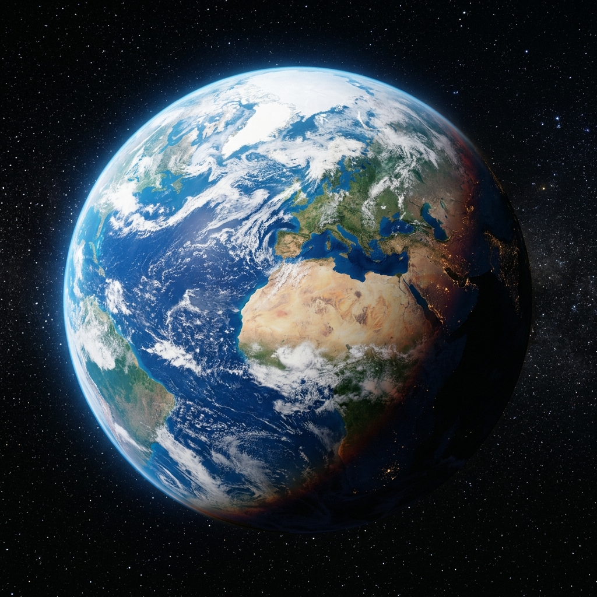
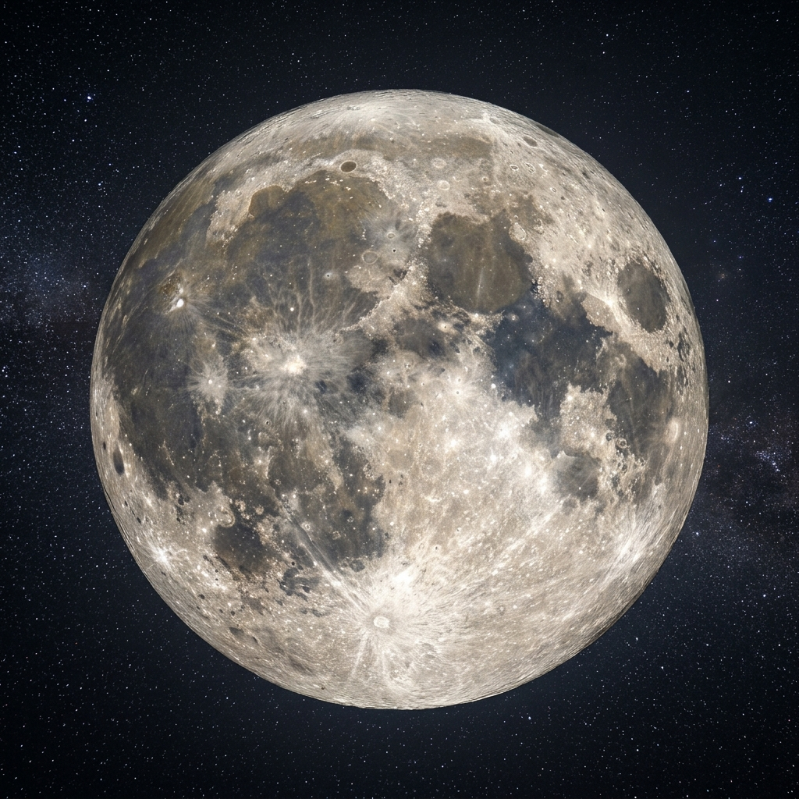

Forma Gjeoide e Tokës
Në një epokë ku toka mendohej e sheshtë, Kurani përdori një terminologji të veçantë rrotulluese që zbulon formën e saj sferike dhe lehtësisht eliptike.
Lexo Artikullin11 tema të përzgjedhura.
Në një epokë ku toka mendohej e sheshtë, Kurani përdori një terminologji të veçantë rrotulluese që zbulon formën e saj sferike dhe lehtësisht eliptike.
Lexo Artikullin
Derisa shkenca debatonte nëse Dielli rrinte në vend apo rrotullohej rreth Tokës, Kurani deklaroi se Dielli udhëton në një trajektore të përcaktuar drejt një destinacioni.
Lexo Artikullin
Kurani i përshkruan meteoritët si "flakë shpuese" (shihab thaqib), një përshkrim vizualisht dhe shkencërisht i përpiktë i trupave qiellorë që digjen në atmosferën e Tokës.
Lexo Artikullin
Kurani e përshkruan Hënën me “mansione” dhe me pamjen e një dege të vjetër palme të lakuar. Artikulli e lidh këtë me shtegun e Hënës, i cili nuk është vijë e thjeshtë, por lëvizje e përkulur në sistemin Tokë-Diell.
Lexo Artikullin
Në vitin 1967 shkencëtarët zbuluan yje që lëshojnë valë zanore me ritme të ngjashme me një trokitje të fortë. Ky "Trokëthyes" kozmik u përshkrua në Kuran me ekzaktësi mahnitëse.
Lexo Artikullin
Atmosfera e Tokës dhe fusha magnetike shërbejnë si një mburojë e pakalueshme kundër rreziqeve vdekjeprurëse të hapësirës, një fakt i deklaruar nga Kurani.
Lexo Artikullin
Zbulimi i vrimave të zeza është një nga arritjet më të mëdha të astrofizikës, dhe tre veçoritë e tyre kryesore përshkruhen saktësisht në Kuran.
Lexo Artikullin
Një lexim dhe thellim i vargjeve Kuranore që paralajmëruan një kalim "nga një shtresë në tjetrën", parashikim i udhëtimit të njeriut në hapësirë drejt Hënës.
Lexo Artikullin
Ajeti kuranor paralajmëron publikun e asaj kohe se malet lëvizin njësoj si retë, duke theksuar në thelb se e gjithë Toka lëviz dhe rrotullohet pandërprerë me ta.
Lexo Artikullin
Studimi i atmosferës moderne ka vërtetuar se çdo shtresë e saj funksionon pikërisht si një pasqyrë "rikthyese", fakt i përmendur shprehimisht në Kuran.
Lexo Artikullin
Kurani përdor terma krejtësisht të ndryshëm: për Diellin përdor fjalën "siraj" (llambë / burim i nxehtë), ndërsa për Hënën fjalën "nur" (dritë e reflektuar).
Lexo Artikullin